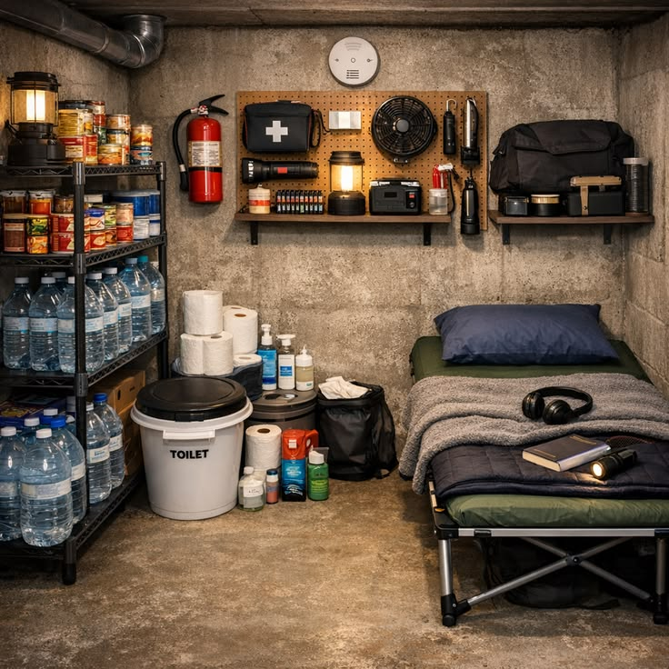
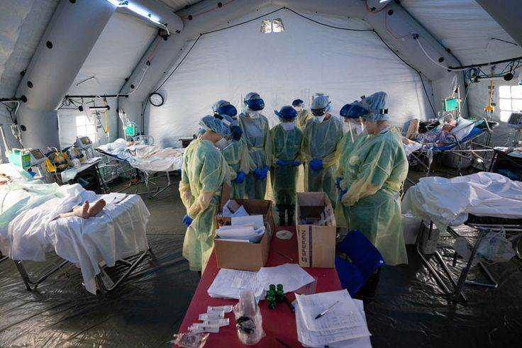
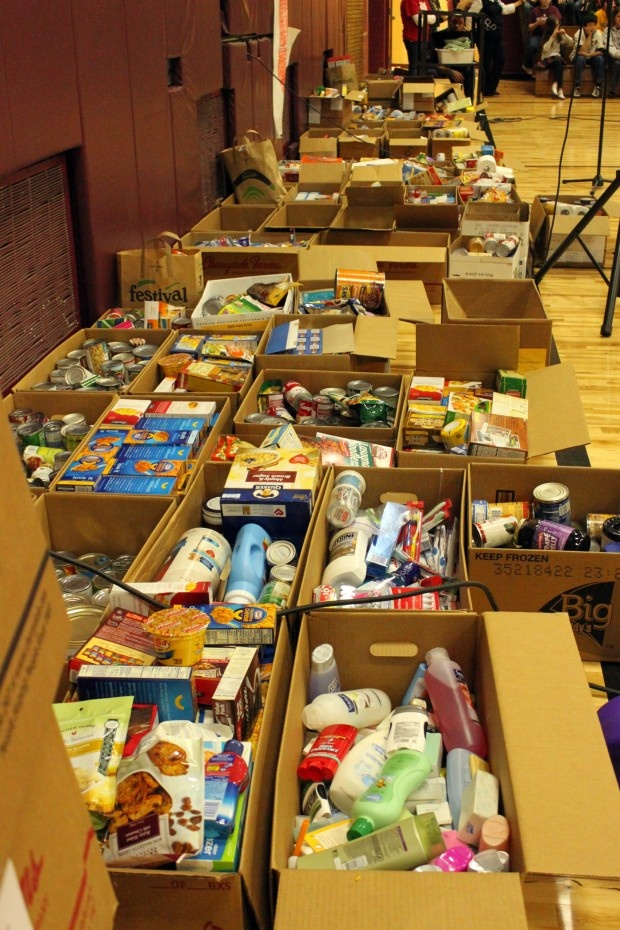

Shelter Categories
Emergency Shelters
Children in crisis situations often have no immediate safe place, leading to exposure to danger, hunger, and abuse. SafeNest helps identify shelters with available space in real-time, so children can be placed quickly.

Medical Support Centers
Problem: Children often lack access to basic healthcare, leading to untreated illnesses and poor health. Solution: The system helps prioritize shelters needing medical supplies or support, improving response time.

Community Homes
Institutional shelters can lack personalized care and emotional support. SafeNest promotes community-based care, helping connect support to family-style homes.

Basic Needs
Shelters struggle with shortages of food, clothing, and daily essentials, especially during high demand. SafeNest allows shelters to post urgent needs, so donors can respond quickly and efficiently.
